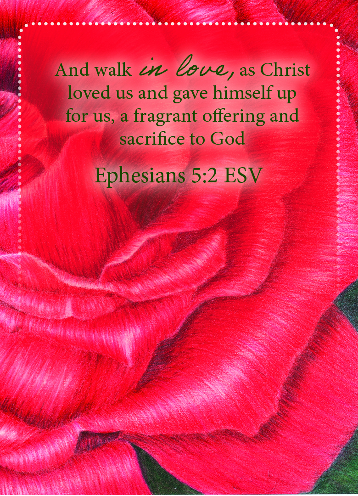

Ephesians 5:2 ESV
,

Pray the Scripture
Father, I thank You for giving me Your only begotten Son, knowing nothing of sin, had to become sin so that I can
be forgiven & gifted with grace I did not deserve. Thank You Lord for enduring the pain of having to turn away
from Your precious son, as Your Word says Jesus cried out My God, why have You forsaken me? How deep & wide is
Your love that You turned away from Your Son so I, who was Your enemy could be saved. Jesus thank You that You
love me so much You choose to give Your life for me and be the lamb that was slain to take away my sins, the very
thing that separated me from You, so we can have an intimate relationship. Remind me Lord God that there was a
heavy price to pay so You can hear me in this moment. Remind me I am nothing without Your Love.
In The Name of Jesus Amen
Next Card
Back To Prayer Card List